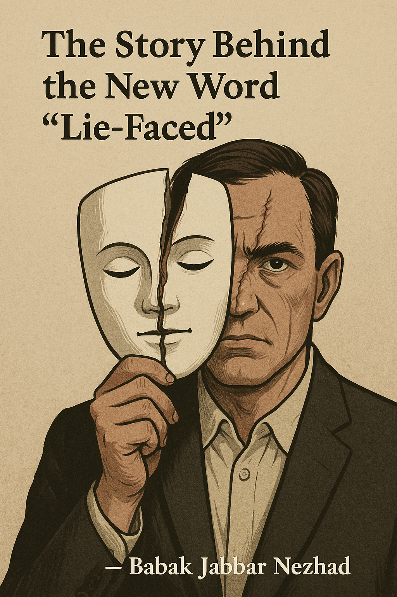

Lie-Faced — A New Word
Lie-Faced (adj.)
/ˈlaɪ.feɪst/
A person who hides intentional dishonesty behind a composed or respectable appearance — especially in positions of authority or academia where truth is expected.
Example: “He claimed the paper was rejected based on a referee report — but no report was ever sent. That’s a truly lie-faced response.”
The Story Behind the Word
Some months ago, I submitted my paper Paradox on the Countable Axiom of Choice to the Journal of Symbolic Logic. After a few months, the editor sent me this message:
Dear Professor Jabbar Nezhad,
This message concerns the manuscript
Paradox on the Countable Axiom of Choice
by Babak Jabbar Nezhad
submitted to the Journal of Symbolic Logic.
We have received now a referee report and the referee recommends to reject your article. We agree with the referee's opinion, and therefore, unfortunately, cannot accept it for publication. Please check the referee reports attached to this letter, you may find them of some use in revising the article for resubmission elsewhere.
Sincerely,
Anton Setzer
But there was no attachment.
I checked the journal’s online portal for my submission — no report there either. So I emailed Professor Setzer back:
Dear Prof. Setzer,
Thank you for your email. Opposite to what you have said, the referee report is not available — neither in your email nor in the journal’s website. I would appreciate it if you could send me the referee report.
Sincerely yours,
Babak
That was over three months ago. I have received no reply since.
Let me be clear: this paper was not a casual thought — it was a formal counterexample to a foundational assumption in constructive mathematics, namely the countable axiom of choice as used by Bishop’s school. It is a serious theoretical contribution.
And yet, rejection came — allegedly via a referee report that was never sent. The veil of academic process was invoked, but the truth was hidden. That’s when I coined the word:
Lie-Faced: a term for those wrapped in layers of pretense, who invoke the name of academic honesty while suppressing its very spirit.
I believe my paper was rejected not for its content, but because I am an outsider in the Western academic literature — and because I challenge the comfort zone of those who prefer safety over truth.
— Babak Jabbar Nezhad
Daş Maku, West Azerbaijan
Painting by Resa and I
← Back to Home